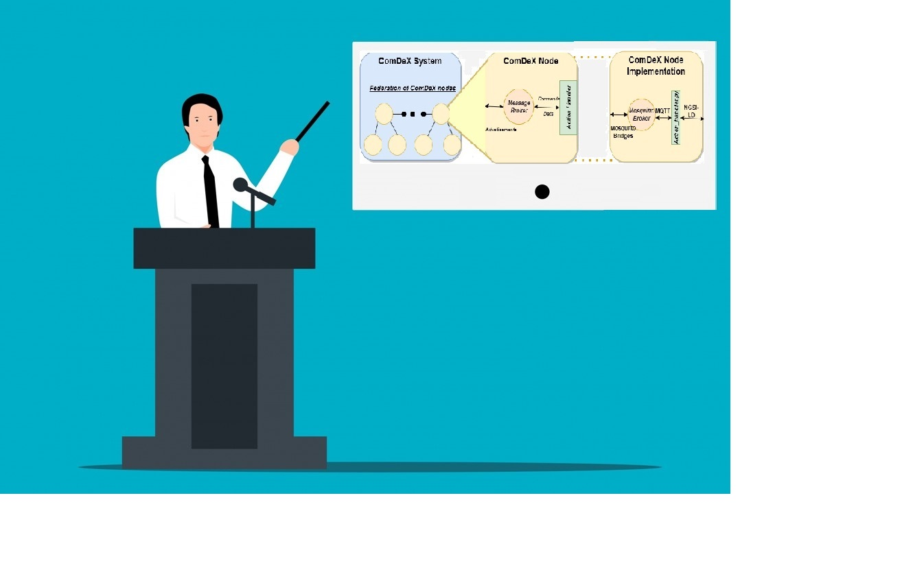

ComDeX: A Context-aware Federated Platform for IoT-enhanced Communities
Table of Contents
- Introduction
- Background
- Architecture
- Prototype Implementation
- Tutorials
- Interactive ComDeX federation creator
- Future Developments
- Related Publications
- Contact Us
Introduction
Welcome to the ComDeX Wiki! ComDeX is an architecture designed for scalable, efficient data exchange across diverse IoT ecosystems. It revolves around property graph-based entities and operates within a federated broker network. This page is your hub for all information related to ComDeX, its prototype, and the current state of this innovative work.

Background
The surge of IoT devices and the subsequent explosion of data generated calls for scalable and efficient solutions to manage the complexity of IoT ecosystems in smart cities. ComDeX addresses this need, providing an architecture designed for seamless, context-aware and selective sharing data exchange and management. Learn more about the background and motivation behind the creation of ComDeX in our Background page.
Architecture
The architecture of ComDeX is centered around entities, which represent real-world objects, manipulated through specific API actions. The ComDeX system uses a federated broker network, leveraging Pub/Sub messages for efficient data exchange. Visit the Architecture page for a detailed breakdown of the ComDeX architecture.
Prototype Implementation
A functional prototype of ComDeX has been created using various technologies. The implementation details of this prototype, including how it integrates Mosquitto and the NGSI-LD information model, are discussed in depth on our Prototype Implementation page.
State of the Implementation and API
Our ComDeX prototype uses the NGSI-LD API for managing operations related to entities. Some of the key API commands and their implementation in the prototype are explained on our API Commands page.
Prototype Code Documentation
For detailed documentation on the code of the ComDeX prototype and its “inner workings”, please refer to the Code Documentation page
Tutorials:
We also provide some tutorials to help you get started with the ComDeX prototype:
Getting Started With the ComDeX prototype
Learn the basic steps to set up and use the ComDeX prototype in this tutorial. It covers the initial configuration and provides a step-by-step guide to get you up and running.
Installation
Follow this tutorial to install the ComDeX prototype on your system. It includes the required dependencies and provides instructions for a smooth installation process.
Configuration
This tutorial focuses on the configuration of the ComDeX prototype. It covers setting up various parameters and options to tailor the prototype according to your specific needs.
Use Cases/Demo Scenarios
Interested in seeing ComDeX in action? Our Use Cases/Demo page provides practical examples of ComDeX managing IoT ecosystems of different scales and complexities.
Interactive ComDeX Federation Creator
Discover the interactive ComDeX federation creator - a tool that lets you visualize and create your own IoT ecosystems within the ComDeX architecture. This hands-on tool provides an immersive experience for understanding the potential and versatility of the ComDeX system. Learn more and start your journey with our Interactive Federation Creator page.
Future Developments / Roadmap
ComDeX continues to evolve, with plans for new features and capabilities. Stay updated on future developments and our plans on our Future Developments page.
Related Publications
A list of publications that have been derived through ComDeX.
Contact Us
We’d love to hear from you! Whether you have questions, feedback, or simply want to chat about ComDeX, don’t hesitate to reach out. Visit our Contact Us page for more information on how to get in touch.